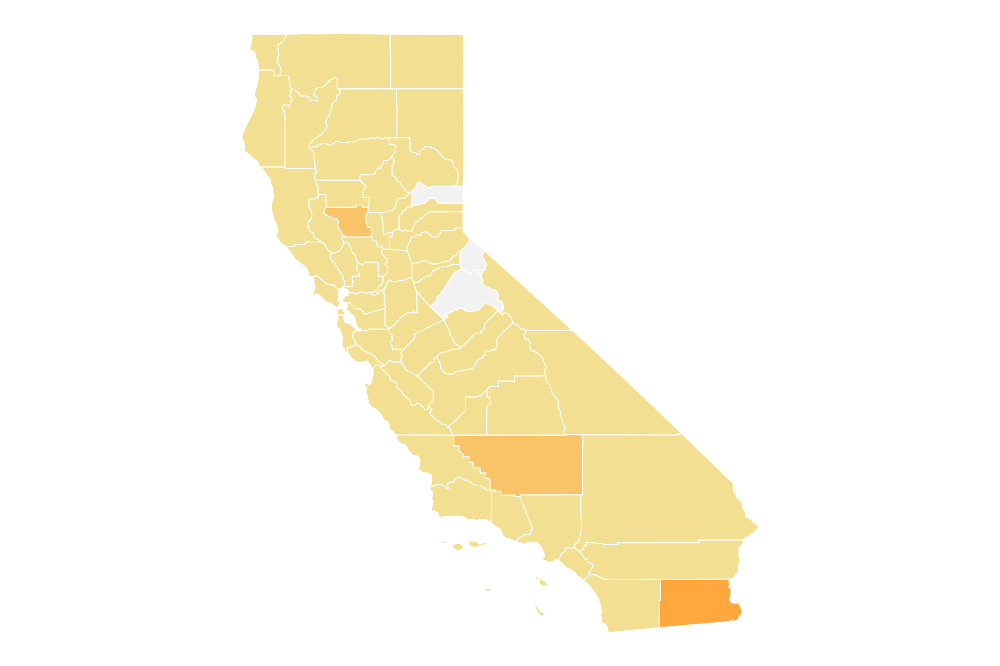

California's COVID-19 Story: A Visual Guide Through Tests, Cases, and County Impacts
Welcome to our interactive visualization journey through the history and impact of COVID-19 in California. As you navigate through this narrative, we'll explore together the surge of cases, the measures implemented to control the pandemic, and the resilience of Californians. We'll dive into the numbers, interpret graphs, and analyze trends, painting a comprehensive picture of this unprecedented period in our lives.
- How has the trajectory of COVID-19 cases in California changed from 2020 to 2023?
- What can the relationship between total tests and positive tests tell us about the spread of the virus?
- How does the pandemic impact differ among California's counties?
- How have monthly COVID-19 cases in California evolved over time?
- Are there specific periods where we see a significant rise in positive tests compared to total tests?
